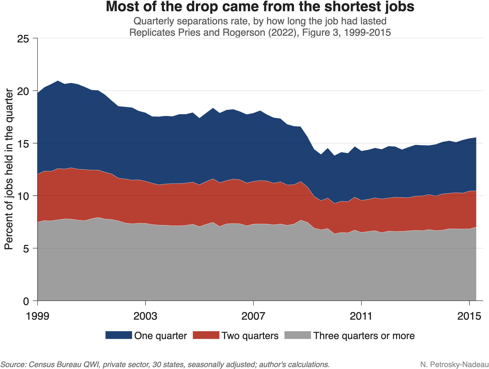

Figure 1

Much recent commentary describes the U.S. labor market as “low hire, low fire”: employers are adding few workers, but they are also letting few go. Low turnover is not new, however. In the 30 states we follow here, the rate at which jobs end each quarter has fallen by about one-third since 1999, and the hiring rate by a similar amount. Its causes can help us read the current moment.
Which jobs stopped ending? A study by Michael Pries and Richard Rogerson (2022) asks which separations account for the decline. They use the Census Bureau’s Quarterly Workforce Indicators (QWI), built from state unemployment insurance records, which show whether a worker was paid by the same employer in consecutive quarters. That lets them split separations by how long the job that ended had lasted: one quarter, two quarters, or longer.
Most of the drop came from the shortest jobs. The chart at the top of this note reproduces their key figure with current data. Between 1999 and 2015, the separations rate fell about 25%. Jobs that ended within their first quarter (dark blue area) account for about 60% of that decline, and two-quarter jobs (red area) for about 24%. Separations from longer jobs (gray area) barely moved. The authors show that the pattern holds across age groups, industries, firm sizes, and states.
Better screening, better matches. The authors then build a model of job search in which employers and job seekers get a noisy signal of match quality before hiring and learn the true quality on the job. When that signal becomes more accurate, fewer poor matches are formed in the first place, so fewer jobs end quickly. In their model, better matching accounts for about 40% of the overall fall in turnover. Alternatives, such as more efficient search or higher training costs, would imply implausibly large swings in job-finding and unemployment. The finding is consistent with evidence that employers have adopted screening tests and workforce analytics. In other words, part of the decline in turnover may reflect better matching rather than a less dynamic labor market.
Figure 2
![Stacked area chart of the same quarterly separations rate by job length, extended from 1999 through the third quarter of 2025, with a dashed vertical line where the paper's sample ends in 2015. After 2015 the total edges up to about 16% in 2019, spikes to about 21% in early 2020 with the spring 2020 layoffs, peaks again near 17.5% in late 2021, and then declines to about 13.4% in 2025. The dark blue area for jobs ending within one quarter shrinks to about 3.8%, its lowest in the series, while the gray area for longer jobs stays near 7% outside of 2020.](../assets/charts/econ-note-2026-09-extended.png)
The pattern continues. The chart above extends the data through the third quarter of 2025. In the year through September 2025 separations stood about 10% below their 2015 level. Once again, jobs ending within their first quarter account for about 60% of that decline. The share of new hires who leave within their first quarter has fallen from nearly 39% in 1999 to about 29% today.
Reading today’s low turnover. Taken together, the evidence suggests that today’s low turnover partly continues a long-running shift toward fewer short-lived jobs. However, some caution is warranted as fewer hires can mechanically mean fewer short jobs, and slow hiring can reflect soft demand as much as better screening. Still, the fact that new hires are less likely to leave quickly suggests that a “low fire” labor market need not signal only lost dynamism. Telling the two apart will shape how we read the months ahead.